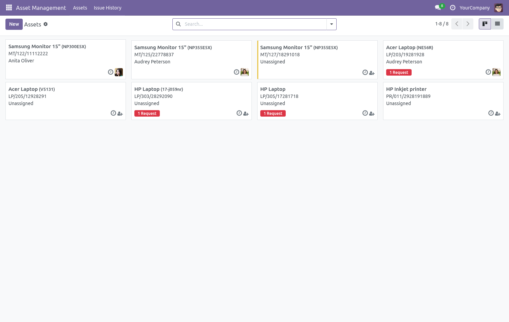
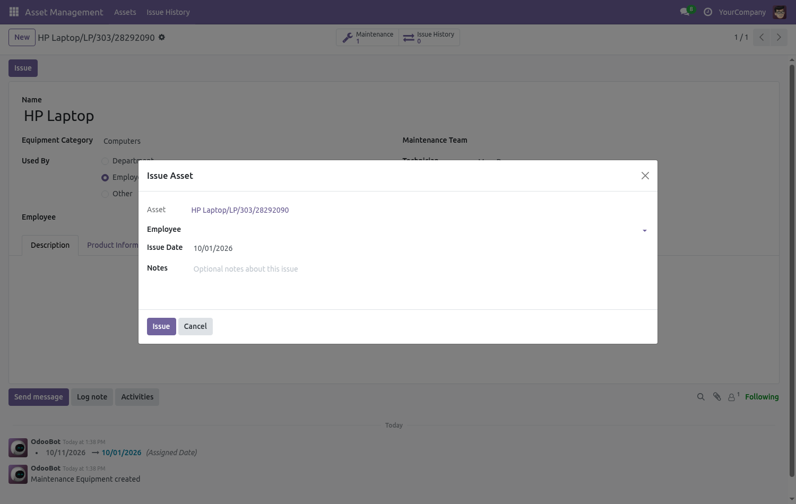
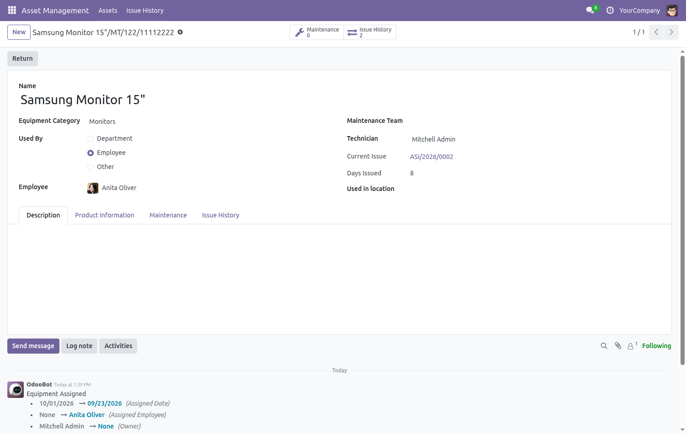
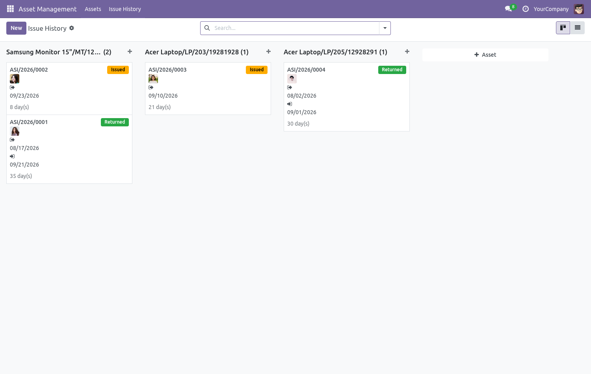
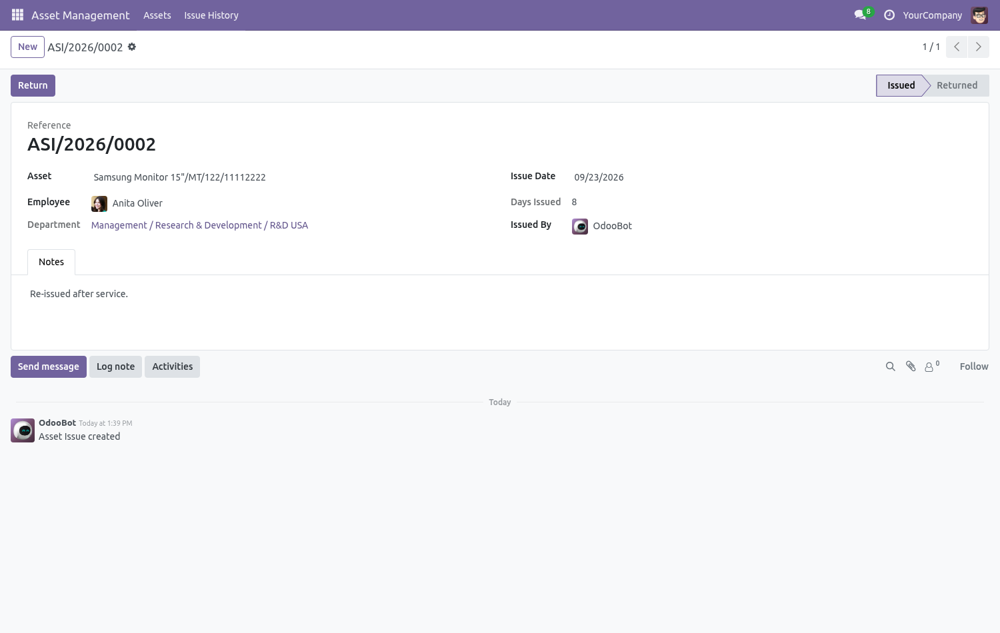
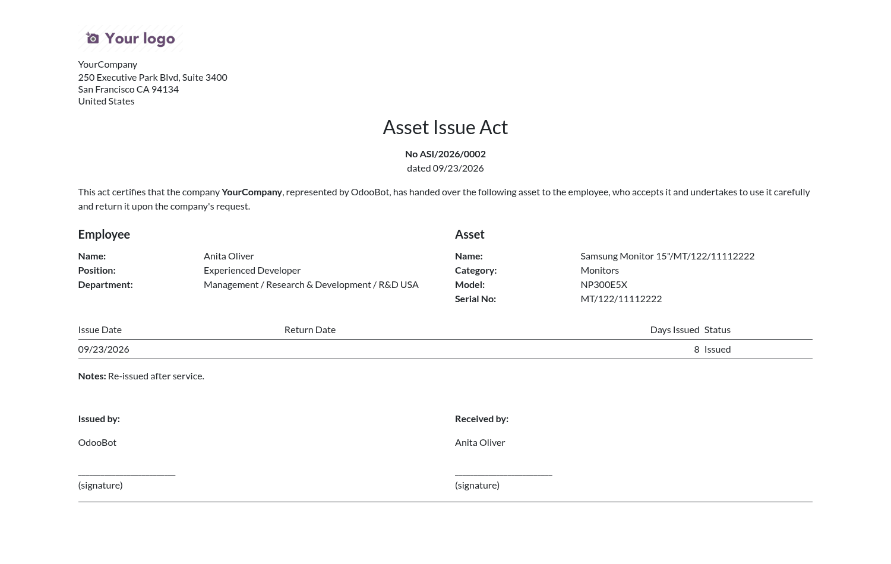
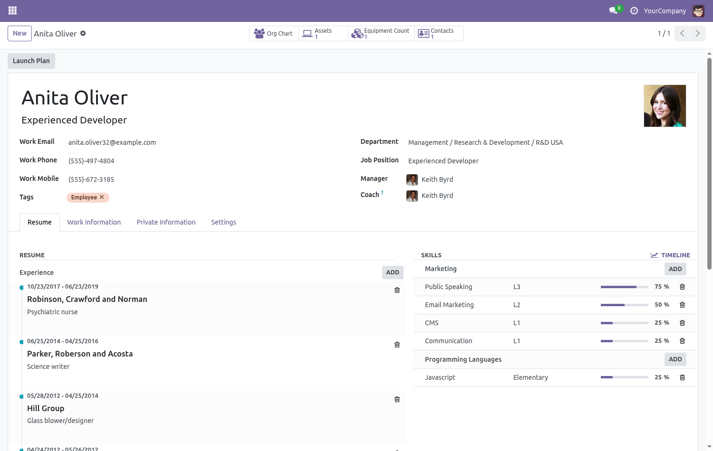

This module lets a company keep track of assets (equipment such as
laptops, tools and other devices) that are handed out to employees.
It is built on top of the standard Equipment
(maintenance.equipment) functionality and adds a full
issue/return workflow, a complete issue history and a printable
Asset Issue Act report.
Assets are managed in the Asset Management app. The module reuses the standard equipment model, so categories, serial numbers, vendors, costs and maintenance requests work out of the box.

Open an asset and click the Issue button. A wizard lets you select the employee, the issue date and optional notes. The asset is then automatically assigned to the selected employee and the number of days since the issue date is computed on the fly.

Click the Return button on an issued asset to return it to stock. The current issue record is closed, the employee assignment is cleared and the asset can be issued again. The asset form also shows the current issue reference, the number of days the asset is issued and the full issue history.

Every issue and return is stored as a history record with a unique reference. The kanban view groups records by asset by default; grouping by employee, department or issue month is available in the search panel. Each card shows the employee, dates, the number of days and the status.

The issue form shows the asset, employee, department, dates, computed days issued and the responsible user. The status bar tracks the Issued / Returned state and the Return button closes the record.

A printable Asset Issue Act PDF report is available under the Print menu of every issue record. It contains the act number and date, the employee details (name, position, department), the asset details (name, category, model, serial number), the issue/return dates, the number of days and signature blocks for both parties.

The employee form gets an Assets smart button showing the number of issue records and giving one-click access to the full list of assets issued to that employee.

maintenance.equipment) and employee assignment from hr_maintenance.ASI/YYYY/NNNN).maintenance.group_equipment_manager).